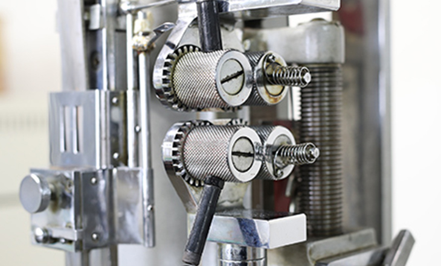
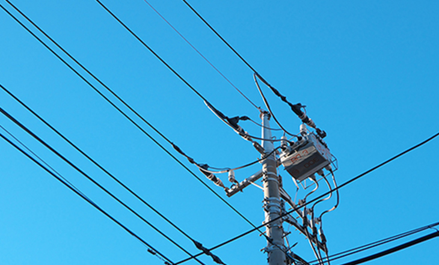

硬質塩化ビニルとは、汎用性の高い樹脂である塩化ビニルの中でも、特に耐久性が強化されたものです。さらに添加物を加えることで、様々な性質に変えやすいという特性もあります。
耐水性を高めたり、元から高い難燃性をさらに向上させたりと、使用するシーンに合わせたカスタマイズが可能です。他にも耐疲労性や耐薬品性に優れ、電気特性も良いなど、非常に長所の多い素材ですが、成形に携わっている企業・工場は多くありません。その理由は、硬質塩化ビニルの成形が非常に難しい点にあります。
成形する際の加熱温度や圧力、硬化時間に非常に細かい調整を要するため、熟練の技術がなければ、すぐに不良を起こしてしまいます。
さらに加熱時に素材自体から発生するガスにより、すぐに金型を錆び付かせてしまいます。素材自体が非常にデリケートなため、金型の清掃やメンテナンスを頻繁に行う必要もあります。それゆえ、硬質塩化ビニルを成形するには、専用の成形機が必要になるなど、非常に手間のかかってしまう素材なのです。

それほど取り扱いの難しい硬質塩化ビニルですが、チヨダでは難なく成形しております。それは、一つひとつの工程において、手間を惜しまず、丁寧に成形に取り組んでいるから。熟練の職人による成形時の巧みな微調整や金型のこまめな清掃・メンテナンスの徹底など、素材の問題点をしっかりと解消することで、硬質塩化ビニルの成形・加工における技術やノウハウを磨いてまいりました。
その技術で生産された電気配管用部品（継手）といった硬質塩化ビニル製品は、多くのお客様から、「チヨダさんに任せておけば大丈夫」と言っていただけるまでになりました。今後もより良い技術・ノウハウの研鑽に努めてまいります。
難燃性ポリエチレンとは、その名が示す通り、難燃性の高いポリエチレンです。成形性や耐薬品性、耐候性に加え、耐電導性や難燃性も高い素材であるため、特に電柱や電線を覆う絶縁カバーなどに用いられています。
当社でも、難燃性ポリエチレンを使用した絶縁カバーを製造しております。素材の優位性を活かした製品づくりはもちろんのこと、温度や湿度といったエリアごとの特性に合わせて製造できる製品開発力も当社の強みです。実際に、当社の製品は北海道から沖縄まで、幅広いエリアで使用されています。

チヨダでは、上記に挙げた素材以外にも成形のご依頼も承っております。通常のポリエチレンはもちろん、ガラス繊維を含んだ強化樹脂であるFRP耐熱プラスチックも成形が可能です。「こんな製品を作ってほしい！」というご依頼をいただければ、当社から最適な素材をご提案させていただきますので、まずはお気軽にご相談ください。

チヨダの高度なプラスチック成形技術と品質管理で電力会社様向けの絶縁カバーを始め、特殊継手、特に硬質塩化ビニル、難燃性ポリエチレン、特殊ポリエチレン、FRP耐熱プラスチック等を材料とした製品を設計から金型製造も含め成形に至るまで一貫して生産しております。多くの企業様からご信頼いただきながら、多様なニーズにお応えするユニークな製品を生産しております。